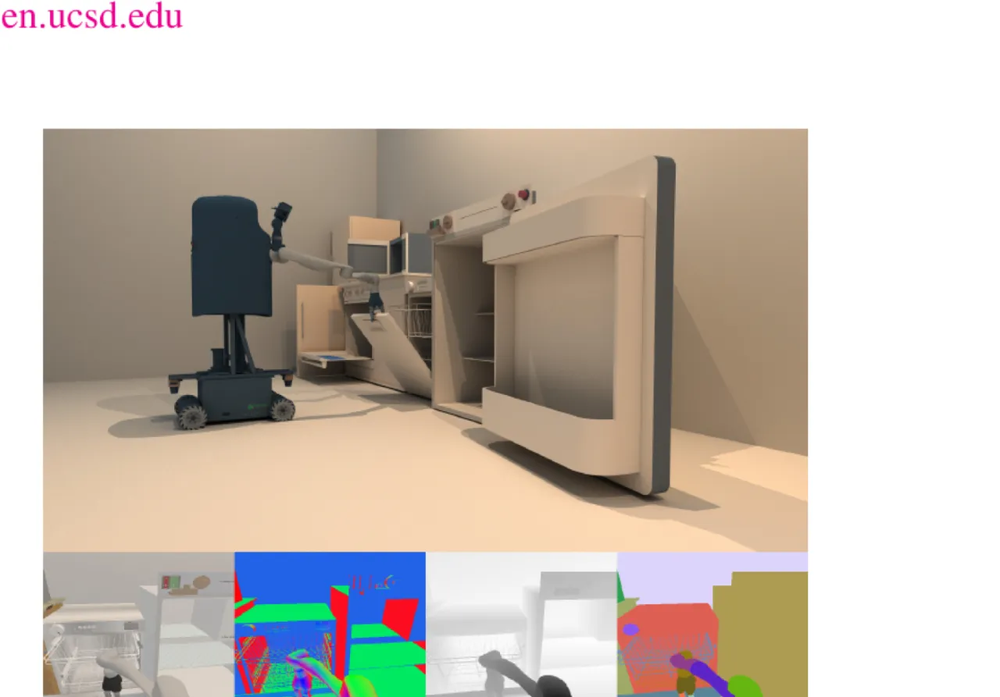
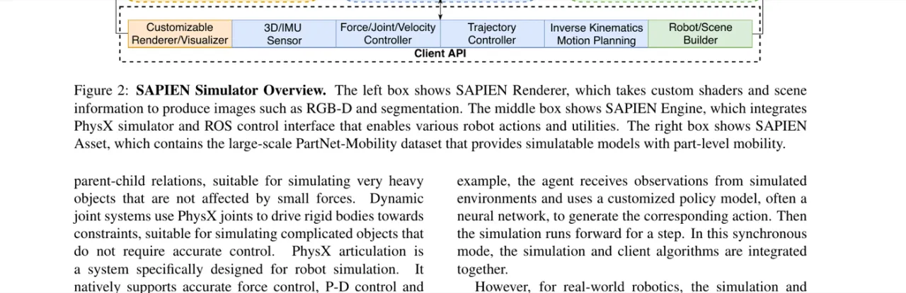
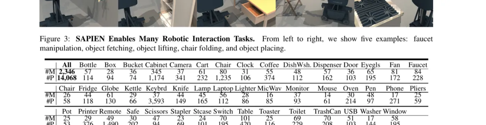
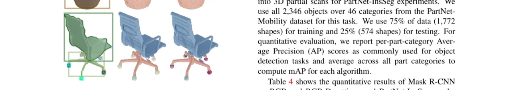

SAPIEN 是一个真实物理感知的仿真平台，集成了 46 个物体大类、14,068 个关节体模型（PartNet-Mobility 数据集），提供完整的 PhysX 物理仿真、ROS 接口以及 Python API，支持机器人感知（部件检测、运动属性估计）和交互（启发式控制、强化学习）研究。
构建家庭辅助机器人一直是视觉与机器人领域的核心追求。机器人要完成开冰箱、拿取物品等日常任务，就必须能够感知并操作具有可动部件的关节体（如门、抽屉、水龙头）。然而现有仿真环境在物理真实性、关节体规模和向真实机器人的迁移能力上均存在明显不足。
"We take one step further in constructing an environment that supports household tasks for training robot learning algorithm. Our work, SAPIEN, is a realistic and physics-rich simulated environment that hosts a large-scale set for articulated objects."

现有仿真环境（OpenAI Gym、RLBench、DeepMind Control Suite 等）普遍存在以下问题：
如表 1 所示，与 Shape2Motion、RPM-Net、Hu et al. 等已有部件数据集相比，SAPIEN 以 46 类、2,346 个模型（14,068 个可动部件）显著领先，且提供丰富的纹理和真实渲染效果。
SAPIEN 围绕三个核心模块构建：SAPIEN Engine（基于 PhysX 的物理仿真）、SAPIEN Renderer（支持 OpenGL、光线追踪的渲染器）和 SAPIEN Asset（PartNet-Mobility 数据集及机器人模型库）。三者通过统一框架集成，提供 Python API 和 ROS 接口。

SAPIEN 使用开源的 Nvidia PhysX 4.1 提供精确的关节体物理仿真，支持机器人操作系统（ROS）。提供三种关节体类型：kinematic joint system（运动学关节，提供运动对象约束）、dynamic joint system（动态关节，模拟受力变化）以及 PhysX articulation（关节铰链）。仿真器可在单核上以约 5000Hz 运行，使用 OpenGL 渲染约 700Hz，支持同步与异步两种运行模式，后者允许仿真与客户端算法独立运行。
SAPIEN Renderer 支持 OpenGL 4.5 和 GLSL，提供 RGB 图像、深度图、法线图以及语义分割图的同步输出。还集成了基于 OmniNavi diffuse model 的 GGX specular model，并通过将 OpenGL 替换为 Nvidia OptiX 光线追踪引擎，以较低渲染速率（约 1 帧/步）生成高质量照片真实感图像（见图 1 上方）。
SAPIEN Asset 提供 PartNet-Mobility 数据集：涵盖 46 个物体大类的 2,346 个三维交互模型，每个模型均标注了部件级关节（运动类型：平移、转动）和关节极限。模型使用 URDF 格式描述，支持 PhysX 物理模拟；接触采用网格分解方案，确保在仿真中精确处理碰撞。针对每个可动部件，还提供了运动限制的相对位置标注（作为 part states），以及针对螺钉等特殊运动的处理（combined hinge+slider = screw）。

SAPIEN 通过 ROS 接口提供传感器数据、控制指令和运动规划能力。在最低层，力和力矩可直接作用于关节，类似 OpenAI Gym；ROS 控制器提供关节空间和笛卡尔坐标空间控制；高层提供基于 MoveIt! 的轨迹规划和逆运动学求解。客户端 API 统一了接口，使仿真机器人与真实机器人使用完全相同的 ROS API，无需额外适配即可部署。
论文在两类核心视觉任务上评估 SAPIEN：Movable Part Detection（可动部件检测）和 Motion Attributes Estimation（运动属性估计），并展示两类机器人交互任务（door/drawer 开合）的启发式方法与强化学习结果。
使用 Mask R-CNN（以 2D RGB 图像为输入）和 PartNet-InsSeg（以 3D RGB-D partial scans 为输入）两种算法在 PartNet-Mobility 数据集上评估。数据集：46 个类别共 2,346 个物体，使用 75%（1,772 个形状）训练、25%（574 个形状）测试；从随机视角采样 20 张 512×512 图像，在仿真中用简单照明渲染（RGB、深度、法线、语义分割图）。评估指标为 per-part-category Average Precision（AP）及全类平均 mAP。
| 算法 | 输入 | Cabinet | Table | Faucet | All mAP |
|---|---|---|---|---|---|
| Mask R-CNN | 2D RGB | 62.0 / 94.2 / 66.4 / 27.7 | 54.3 / 88.0 / 3.4 / 6.3 / 0.0 | 52.5 / 47.9 / 99.7 / 54.4 / 67.5 | 53.0 |
| PartNet-InsSeg | PC (XYZ) | 20.6 / 65.9 / 33.1 / 9.8 | 15.7 / 71.3 / 1.7 / 1.0 | 60.2 / 58.8 / 99.4 / 42.7 | 43.8 |
| PartNet-InsSeg | PC (XYZRGB) | 17.6 / 64.3 / 23.6 / 5.0 | 16.4 / 8.1 / 8.1 / 1.3 / 2.1 / 1.0 | 29.0 / 64.1 / 78.0 / 42.0 / 63.5 | 37.1 |
结果表明：两种方法在检测小型可动部件（如桌脚轮 table wheel 和桌子脚轮 table caster）上表现较差；对具有相对均衡尺寸分布的物体类别（如风扇 fan 和水龙头 faucet）效果更好。

针对关节体的运动属性估计任务，论文考虑两类刚性运动：3D rotation（3D 旋转）和 3D translation（3D 平移）。对平移运动用 3 维向量表示方向；对旋转运动用两个 3 维向量分别表示旋转轴方向和轴上一点的相对位置。评估指标包括：方向差（direction diff）、旋转轴起点差（origin diff）、以及旋转角误差与平移距离误差。
| Setting | Dir (°)↓ | Orig (cm)↓ | Rot (°)↓ | Trans (cm)↓ |
|---|---|---|---|---|
| 2D acc, 2D acc | 7.94 | 76.62 | 43.53 | 8.24 |
| 2D acc, 5 acc | 5.48 | 59.35 | 34.05 | 7.48 |
| 5 acc, 5 acc | 3.13 | 36.85 | 19.99 | 6.41 |
| 5 acc, 5 acc + depth | 2.84 | 35.09 | 18.23 | 6.42 |
实验表明加入深度信息对方向估计和旋转轴定位有明显帮助；增加视角数量（从 2 到 5）显著提升各项指标。
论文在 SAPIEN 中演示了两类机器人操作任务的执行：
论文指出，"it is still infeasible to simulate real-world physics exactly, any physical simulator needs to decide the level-of-details and accuracy it operates on." 现有物理仿真无法完全复现真实世界的物理特性，特别是软体和流体（SAPIEN 仅支持刚体关节体）。
论文在实验结果中明确指出："both methods perform poorly on detecting small movable parts (e.g., table wheel and table caster)"，这一现象在真实机器人操作中尤为关键，需要更好的算法设计。
SAPIEN 的 PartNet-Mobility 数据集仅覆盖家用场景中的刚性可动部件（门、抽屉、水龙头等），不支持软体变形物体（如布料、果蔬）的仿真。这限制了其在更广泛操作任务（如食品处理、衣物整理）中的应用。
尽管 SAPIEN 提供光线追踪渲染和 ROS 接口，但仿真图像与真实摄像头图像之间仍存在外观差距（domain gap），可能影响模型在真实机器人上的迁移效果，需要额外的 domain adaptation 方法。